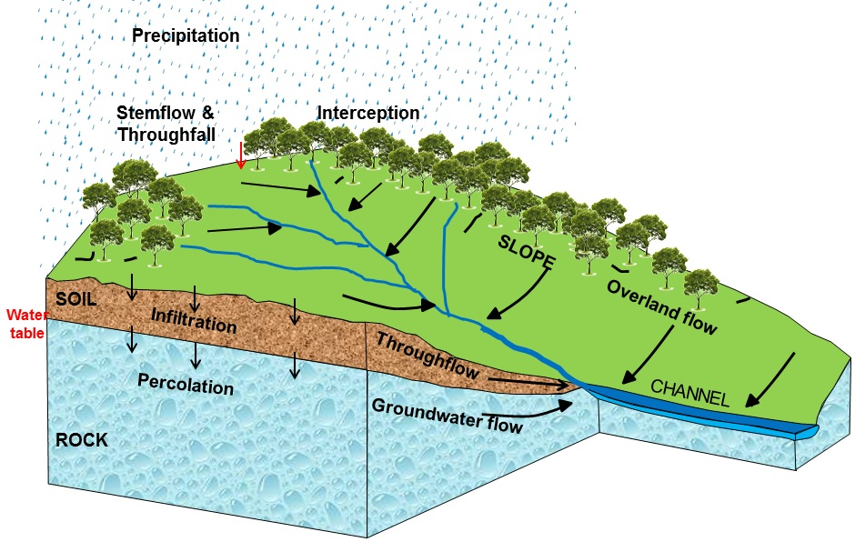
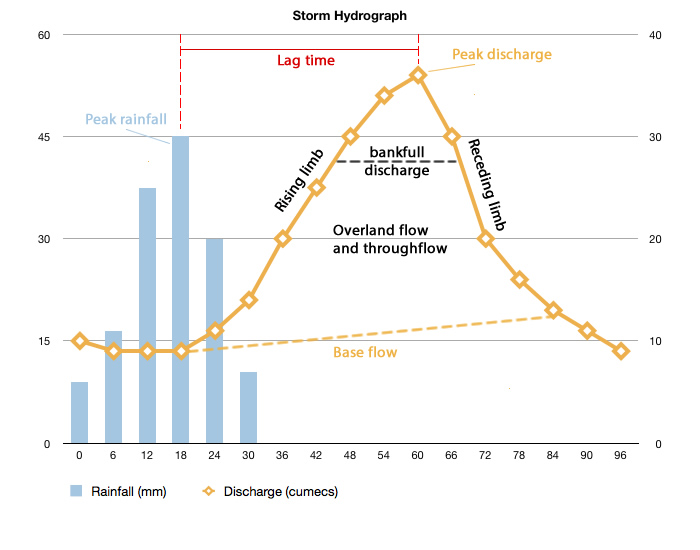
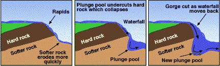

1.1. the Drainage Basin System
Definition and Overview:
- The area of land drained by a river and its tributaries. It is often referred to as a river catchment or river basin
- The drainage basin is an open system, meaning it receives inputs and outputs of both energy and matter(water)
Key Components:
- Inputs:
- Precipitation - Water falling from the atmosphere as rain, snow, hail or sleet
- Stores:
- Interception - precipitation is caught and stored by vegetation before it reaches the ground.
- Soil Moisture (SM) - Water stored in the soil in things called pores (small air pockets)
- SM Deficit: available water is being used up
- SM Recharge: precipitation > Potential evaporation. Some dry pores refill
- SM Surplus: soil is saturated, water cannot enter, so flows over the surface
- SM Utilisation: Evapotranspiration (and other water uses) > precipitation
- Field Capacity: amount of water held once excess has drained away - saturation point
- Wilting Point: the range of soil Moisture content at which permanent plant wilting occurs
- Balance = precipitation - (run off + Evapotranspiration + change in soil moisture)
- Ground Water - Water stored underground in aquifers
- Surface Water - Water stored (on surface) in lakes, wetlands, ponds, and puddles
- Channel Storage - All water stored in rivers, streams and drainage channels.
- Flows (transfers):
- Above Ground:
- Throughfall - leaves and twigs become saturated so water drips from them. Precipitation can also fall through gaps in vegetation cover
- Stemflow - precipitation is intercepted by vegetation, then runs down the branches and main trunk
- Overland flow - when soil is saturated, or precipitation exceeds infiltration rate, surface runoff occurs (where water flows over the surface)
- Hortonian flow - shallow, laminar, fast moving water that causes severe soil erosion when precipitation exceeds the infiltration capacity and depression soil capacity
- Channel flow - movement of water in channels such as streams and rivers
- Below Ground:
- Infiltration - precipitation is absorbed in soil
- Infiltration Capacirty: maximum rate that precipitation can be absorbed by soil in given conditions
- Infiltration is inversely proportional to overland runoff. Depends on: rainfall duration, antecedent soil moisture, porosity, slope angle, vegetation.
- Percolation - slow movement of water downwards through the soil into bedrock under gravity. Fast in Carboniferous Limestone
- Rate depends on permeability and porosity of bedrock. Chalk and sandstones are porous, spaces allow water to percolate
- Throughflow - water flows through the soil in natural pipes or percolines. Occurs above bedrock
- Groundwater - water that has infiltrated the ground, entered the phreatic zone and discharged into the channel
- Phreatic zone: part of an aquifer (permeable rocks and sediments that can hold groundwater or allow it to pass through) below the water table where all pores are permanently saturated
- Baseflow - where groundwater seeps into the river’s bed and contributes to discharge. Very slow transfer from bedrock and very deep throughflow. Takes anywhere between several months to a couple of years
- Outputs:
- Evapotranspiration - The combined process of evaporation from water surfaces and transpiration from plants
- Potential Evapotranspiration - the amound of evaporation that would occur if an unlimited water source were available
- River Discharge - Water leaving the drainage basin via river channels (water that flows into the sea)
- Q = AV (Q = Discharge, A = Cross Sectional Area, V = Velocity).
Measured in meters-cubed per second (cumecs)
Underground Water:
- Water Table: upper layer of the phreatic zone. It will rise and fall depending on the amount of rainfall percolating downwards, and the amount of baseflow from lower rocks. The aeration zone is seasonally wetted and seasonally dries
- Ground Water:
- Recharge occurs with:
- Infiltration (from precipitation)
- Seepage (through banks/bed of rivers, lakes, puddles and ditches)
- Leakage and inflow (from adjacent rocks, aquifers)
- Artificially from irrigation, resevoirs
- Loss occurs with:
- Evapotranspiration (mainly low areas)
- Natural discharge (seepage and spring flow)
- Leakage and outflow (into aquicludes from aquifers)
- Artificial abstraction
- Aquifers: permeable rocks (sandstone, limestone, chalk) that contain significant quantities of water. Water inside moves slowly and maintains streamflow – by absorbing or releasing water in wet/dry periods
- Springs: water flow reaches the surface, making a spring. Might be substantial enough to become a source. Usually where percolating water reaches an impermeable layer or the saturated zone
- Water budget equation: S=P−Q−E
- Soil Storage, Precipitation, QChannel Flow, Evapotranspiration
Drainage Basin System Diagram:

1.2. Discharge relationships within drainage basins
Hydrograph Components:
- Annual Hydrograph - to study responses of the river to its environment; highlights seasonal characteristics, therefore biggest influencer is climate
- Storm Hydrograph - shows variations of river discharge over a short time period. Includes both discharge and rainfall on the y-axis
- Cumecs - cubic metres per second. Unit of discharge
- Approach Segment - discharge prior to storm
- Rising Limb - shows quick rise in discharge
- Bank full Discharge - channel full. Any further increase in discharge = flood
- Peak Discharge - maximum river discharge
- Lag Time - time between max rainfall and max discharge
- Receding Limb - less steep than rising, shows discharge decline after peak discharge
- Stormflow - stream discharge after rainstorm
- Quickflow - surface runoff reaches channel quickly

- Storm Process
- Rain falls on drainage basin in large amounts
- Overland flow occurs as precipitation > infiltration rate. Rising limb builds to peak
- After a few hours, overland flow reduces and stops. Throughflow then contributes to discharge and stops floodwaters going down as quickly as they rose
- Baseflow takes over – back to pre-flood state
Drainage Basin Characteristics:
- Size and Shape - small basins respond quicker, so lag time is reduced. River channels in circular basins respond quicker than those in linear ones
- Low Drainage Density - low drainage density causes a long lag time, as water only has a few paths to take
- A dendritic (tree like pattern) will have a higher density. Increased discharge response, greater flood risk and reduced lag time.
- Soil Porosity and Permeability - impermeable surfaces cause greater peak flows, due to more overland flow. Chalks and gravels allow infiltration and percolation, whereas clay soils do not
- Rock Type - impermeable rocks produce a flashier response, lesser lag times and high peak discharge. Limestone hardly produces a storm hydrograph
- Slopes - steeper = more overland = short lag and higher peak flows
- Vegetation Type - dense forest vegetation intercepts more, so reduced flood response. Opposite in winter
- Land Use - creation of impermeable surfaces (urbanisation) or deforestation increase overland flow. Increasing drainage density (drains) carries water to rivers quicker. Peak flow increases, lag time reduces
1.3. River channel processes and landforms
Channel Processes:
- Erosion:
- Abrasion - riverbed and bank eroded by the river’s load. It is the mechanical impact produced by debris rubbing on the river’s sides. Abrasion increases with velocity and effectiveness depends on energy, hardness and concentration of particles
- Corrasion - the erosive action of particles carried by the river
- Solution - the dissolving of rocks (particularly calcium heavy rocks) by removing chemical ions. Maximum rates – fast flowing, undersaturated streams pass over soluble rocks
- Hydraulic Action - direct force of air and water on the rivers banks that causes chunks to break away. Eddies in the water compress water into bank cracks, and the explosion of air bubbles cause the cracks to weaken
- Cavitation - the force of air exploding. With acceleration, pressure drops in fluids, causing air bubbles to form. Cavitation is when these bubbles implode and produce tiny water jets, cutting rock
- Attrition - collision of sediments that wears down both particles. Produces smaller, rounder particles
- Rate of erosion is affected by: amount and weight of load, velocity, gradient, hardness of geology, pH level and human impacts increasing erosion
- Load Transport:
- Traction - large particles that are rolled along the riverbed by the force of water. Spend all/most of time on the riverbed
- Saltration - gravel and small stones hop along the riverbed, as a fast eddy picks them up, and a slower one causes them to fall back down
- Suspension - silts and clays are held up by the water. Gives rivers a cloudy appearance, especially close to the mouth
- Solution - dissolved calcareous rocks
- Load varies with discharge and velocity. Load is calculated at bank full. Capacity is the greatest amount of load that can be carried. Competence is the diameter of the largest particle that can be transported
- Deposition:
- occurs when there is a reduction in energy, often at river mouths, estuaries and deltas
- Energy reduces when: gradient reduces, friction increases, load increases, water volume decreases, water flows on the inside of a meander
- Sedimentation:
- occurs when sediment is dropped from still water
- Flocculation:
- is where charged ions in sea water allow clay particles to group and settle. Flocculation leads to development of mudbanks when water becomes brackish close to the sea
- Hjülstrom Curve:

- Critical erosion velocity: lowest velocity needed to pick up particle of that size - entrainment
- Mean settling velocity: velocity needed to drop particles from suspension
- Clays have high entrainment value due to their cohesive nature, and gravels due to their weight. Sands are easiest to pick up. Clays remain in suspension if velocity is zero. Velocity for transport is always less than the velocity required to pick up (entrain) the particle
River Flow:
- Velocity is affected more by friction than gradient. We can measure friction with:
- Bed roughness:
 , where R is the hydraulic radius, S is channel gradient and V is velocity. Higher the value of N, the rougher the riverbed
, where R is the hydraulic radius, S is channel gradient and V is velocity. Higher the value of N, the rougher the riverbed
- Hydraulic Radius:

- Thalweg: the imaginary line of fastest water velocity down a stream
- laminar - water flows in sheets parallel to riverbed. No eddies or meanders. Common on smooth surfaces
- Turbulent - water closest to bed/banks slowed by friction and is overtaken by thalweg. Turbulence created, and water close to banks eddies towards the banks, water close to the bed eddies towards the bed
- Helicoidal - horizontal turbulence produces a corkscrew motion. The thalweg moves both laterally from bank to bank, but also vertically from surface to bed during one rotation


Channel Types:
- Straight - channel with sinuosity < 1.5. 1 is perfectly straight. Rare, because thalweg will still move from side to side due to helicoidal flow. Normally artificial
- Braided - channel is divided by islands or bars. Islands are vegetated, whereas bars are not and are unstable. Formed with steep gradient, coarse material, easily erodible bank, highly variable discharge. When discharge is reducing (and hence velocity), sediment is plentiful and bars form (coarse then fine sediment). With reduced discharge, river must split to go around the bar
- Meandering - channel slope, discharge, helicoidal flow and load combine to a situation where lateral erosion causes meandering. NOT a result of obstacles
Landforms:
- Meanders:
- a pronounced bend in the course of a river. Pools and riffles cause the thalweg to deflect. Where the thalweg is fastest, erosion occurs, and deposition where it is slowest. Over time, this creates a bend in the river
- River Cliffs - steep side on the outside of a meander bend where erosion is strongest and downwards
- Point Bars - deposits of sediment on the inside of a meander bend, where thalweg is slowest and rising
- Oxbow Lakes - erosion with the thalweg causes narrowing of the bend neck, and after a flood event, the neck is breached. Meander cut off with more deposition, creating an oxbow lake
- Pools - deep sections develop where erosion dominates (high velocity, dominant laminar flow)
- Riffles - shallower sections of the riverbed where sediment has been deposited (low velocity, turbulent flow). Steep positive relief gradient compared to the negative gradient of the pools
- Related to helicoidal flow due to regular spacing
- Different gradients creates variations in subcritical and supercritical flow, causing erosion or deposition
- Waterfalls - river spills over gradient change where more resistant rock is on top of less resistant rock, and splashback undercuts rocks by processes of abrasion. Also produced by rejuvenation, where there is a knick point. Plunge pool removes support for overhang, so collapses. Causes upstream migration
- Gorges - a deep, steep sided valley cause by waterfall retreat

- Potholes - turbulence swirls pebbles around a depression in the river’s bed. Sides widened and deepened as pebble erodes the cavity. Initiated by eddying
- Rapids - upper course feature, where gradient is steep, and riverbed is rocky and irregular. Turbulent flow
- Bluffs - old floodplains erode leaving terraces. Meanders erode the edge of the terrace, creating a line of steep slopes called bluffs
- FLoodplains - flat land made up of alluvium next to the river, rise during floods, as fine silt is deposited. Backswamps are sometimes created during flood events. Riverbed can raise if discharge is low, and sediment is deposited
- Levees - following a flood event where banks burst, wetted perimeter increases. Increased friction reduces velocity, and coarse material is deposited first around the banks, with finer material moving across the flood plain causing back swamps
- Deltas - sediment is deposited where the river meets a standing body of water, due to a loss of energy. Clay particles flocculate and deposit. Bottomset beds (fine material built out by turbidity currents) form first, then foreset beds (coarse material carried seaward by rolling/saltation), then topset beds (fine material built by distributaries)
- Arcuate Delta - Fan shaped. Where longshore drift occurs
- Cuspate Delta - pointed, formed by two opposing currents
- Bird's Doot Delta - still sea allows each distributary to build in any direction
1.4. Human Impact
Catchment Flow Modifications:
- Deforestation - reduced evapotranspiration, increased surface run off, reduced time lag and less surface storage. Higher peak discharge caused
- Afforestation - once a fully established forest, afforestation has the opposite effect to deforestation
- Urbanisation - creation of impermeable surfaces reduces infiltration and increases overland flow. Sewage systems and storm drains get water to the main channel much quicker than throughflow. Lag times are reduced, and flood peaks are increased. Building on floodplains reduces the available flood space, so flood waters will rise higher
- Grazing - ploughing increases infiltration, heavy machinery causes soil compaction, so reduced infiltration, therefore higher peak discharge. Less evapotranspiration than forested area
- Water logging/salination occur with poor drainage
- Abstraction - over abstraction causes the drying up of rivers, falling water tables and saltwater intrusion in coastal areas
- Channelisation - increases the hydraulic radius of a channel, so shorter lag times and higher flood peaks
- Reductions in industrial activity - old springs re-emerge - surface water flooding, basements flood, leakage into tunnels, reduced slope stability
- Water Storage - building dams are good for flood/drought control, irrigation, hydroelectric power. However, they can lose water, salinization occurs and ground water changes
Causes and Impancts of River FLoods
- Physical Causes:
- Heavy, persistent rainfall (deep weather depressions)
- Rapidly melting snow or ice
- Impermeable soil and bedrock
- Coastal storm surges
- Lack of vegetation
- Disaster (natural, or dam failure)
- Human Causes:
- Urbanisation (impermeable surfaces, storm drains, channel restrictions from bridges)
- Floodplain developments increase risk
- Engineering that obstructs the channel
- Mechanised farming and poor/inappropriate farming practices
- Impacts:
- Deaths, damage and disruption
- Death toll higher in LICs. Cost higher in HICs
Flood Prediction
- Recurrence Interval: - how often, on average a flow of a certain size is like to occur
- A 100-year flood is one that is expected to occur every 100 years, on average
- Plotting a graph of flood magnitude against recurrence interval can show when a certain size flood is likely to occur, using a best fit line
- Or, look at flood history
- Flood Risk Maps - show where the river is likely to flood, depending on if flood risk is severe (1-75 years) or moderate (76-200 years)
- Areas most at risk are low-lying parts of active floodplains, small basins subject to flash floods, areas below unsafe dams and low-lying inland shorelines
Flood Prevention
- Forecasting and Warning - use of weather satellites, have an emergency plan, radio/internet communication, rain gauges, river discharge gauges. Computer models that compare new data with history
- Loss Sharing - disater aid and insurance
- Hard Engineering - work against natural processes. Construct dams, levees, straighten the channel, reservoirs, build diversion spillways. Normally fixes local problem but causes more up/downstream
- Hazard Resistant Design - adjust buildings to reduce losses. Sandbags, seal doors/windows, move off lower floors
- Flood gates installed on individual houses. Eg. Yarm, on the River Tees
- Land Use Zoning - move/avoid building on flood prone areas. Allow flooding to happen on floodplain
- Soft Engineering - working with natural processes. Flood abatement decreases amount of run-off. Afforestation, contour ploughing, remove sediment. Flood diversion allows areas to be flooded, not built upon
- Appropriate Floodplain Use - working from the channel outwards, appropriate use would be - protected wetlands, rough grazing land (that animals can be removed from), parks and leisure areas, houses, then critical buildings such as hospitals furthest away